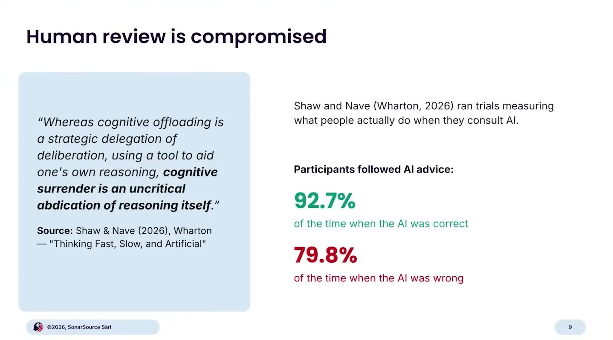
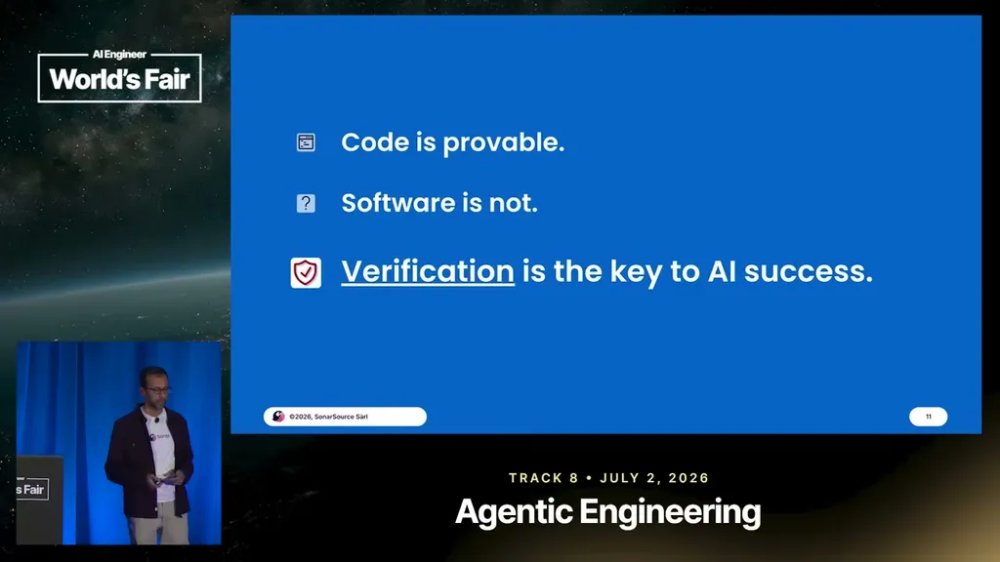
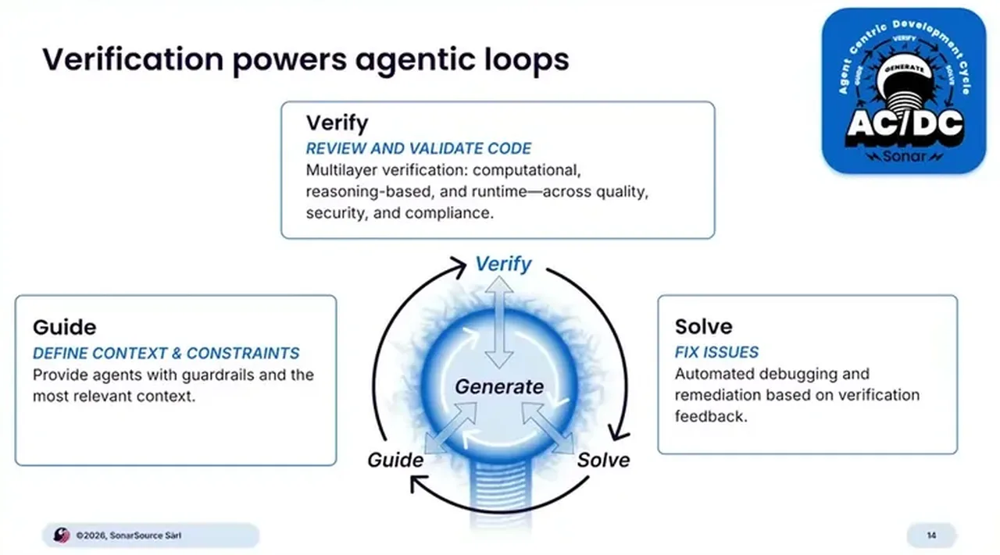
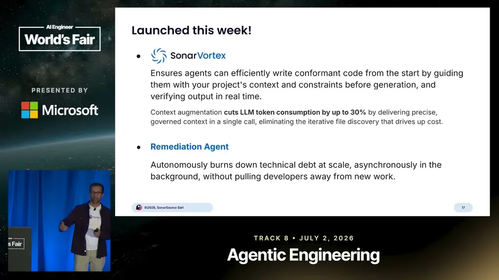

A Carnegie Mellon study sorted GitHub projects by whether an AI coding tool (Cursor) was used, using SonarQube metadata to track quality. It found a temporary productivity spike lasting about 3 months, after which productivity fell back down, attributed to a persistent rise in static-analysis warnings and code complexity that outlasted the spike.
“they found that there was, in fact, a temporary spike in productivity, um but it lasted about 3 months and then it went back down”
▶ watch at 02:02A Wharton study gave participants tasks with AI assistance, where the AI was instructed to confidently lie some of the time. Participants followed correct AI advice 92.7% of the time but also followed incorrect AI advice nearly 80% of the time, which the speaker argues is happening in code review as agentic output volume grows and reviewers rubber-stamp more.
“while participants did follow the AI advice 92.7% of the time when the AI was correct, they unfortunately also listened to the AI nearly 80% of the time when the AI was wrong”
▶ watch at 06:42
Sonar's verification model treats code as coming from anywhere (human or any AI) and applies the same comprehensive, auditable review regardless of origin, deliberately using a different methodology than whatever wrote the code. It combines multiple review techniques, including computational review and LLM-driven review, since no single method catches every issue class.
“no matter where the code is coming from, you want to have a a similar comprehensive regime to verify that code that works the same no matter how that code was written”
▶ watch at 09:48“You need to use computational review, you also need to use LLM driven review, and everything else in between, right?”
▶ watch at 10:18
Sonar frames agentic development as three phases: guide (guardrails, context, and constraints given up front so the agent writes better code the first time), verify (multi-layered, reasoning-based checks across quality, security, and compliance), and solve (the agent remediates found issues and the loop repeats).
“what guide allows you to do is provide guardrails and context and constraints to make sure that the agent has everything it needs up front to write better code”
▶ watch at 11:20“We call it ACDC, or agentic agent-centric development cycle.”
▶ watch at 10:49
Sonar recently acquired Gitarr, an AI code review company based in San Mateo that automates the full CI workflow including blocking, fixing, and merging PRs. It also announced Sonar Vortex, which gives coding agents in-loop access to guardrails and real-time verification, plus a remediation agent for tackling legacy tech-debt backlogs; both are GA as of this week. Sonar reports over 7 million developers and roughly 750 billion lines of code analyzed daily across its platform.
“we also just recently, and by recently I mean just a few weeks ago, acquired a company called Gitarr, based right here in San Mateo”
▶ watch at 13:55“We have over 7 million developers around the world using us and we analyze close to 750 billion lines of code across our solutions every single day.”
▶ watch at 20:37
(ours) The Wharton and CMU studies do the real argumentative work here; the product pitch (Vortex, Gitarr, ACDC branding) is Sonar's proposed solution to a problem that's evidenced independently of Sonar's own tooling, which is worth separating when evaluating the claims versus the pitch.
| Stance | Claim | t |
|---|---|---|
| asserts | A Carnegie Mellon study found AI-assisted coding produced a temporary 3-month productivity spike that reversed as static-analysis warnings and complexity persistently increased. | 02:02 |
| warns | Humans followed AI advice 92.7% of the time when it was correct but also followed it nearly 80% of the time when it was wrong. | 06:42 |
| recommends | Verification should apply the same comprehensive regime to code regardless of whether it was written by a human or an AI. | 09:48 |
| recommends | No single review method catches every problem, so verification should combine computational review, LLM-driven review, and other techniques. | 10:18 |
| recommends | Before an agent starts writing code, it should be given guardrails, context, and constraints so it writes better code on the first pass. | 11:20 |
| asserts | Sonar's three-phase agentic development framework is called ACDC, for agent-centric development cycle. | 10:49 |
| asserts | Sonar recently acquired Gitarr, an AI code review company based in San Mateo. | 13:55 |
| asserts | Sonar reports over 7 million developers using its platform and close to 750 billion lines of code analyzed daily. | 20:37 |
Machine-readable copy embedded in this page (script#ontology) and in the corpus ontology.